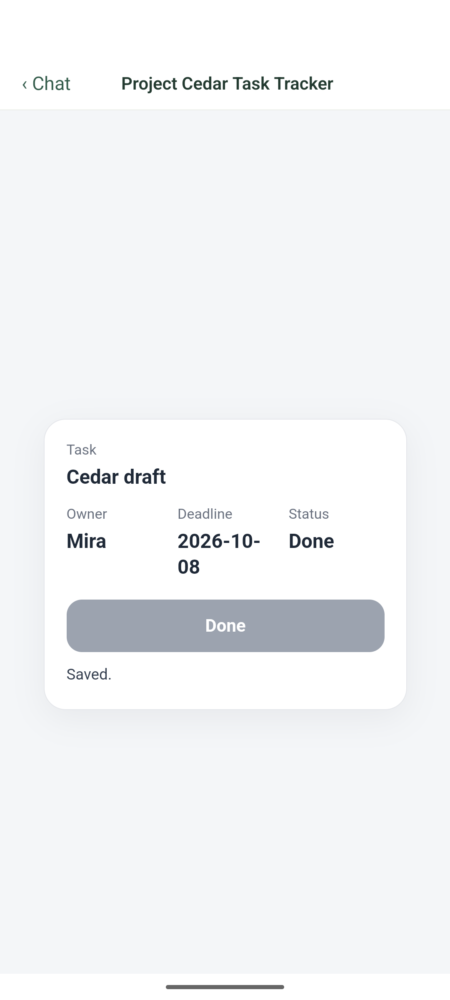
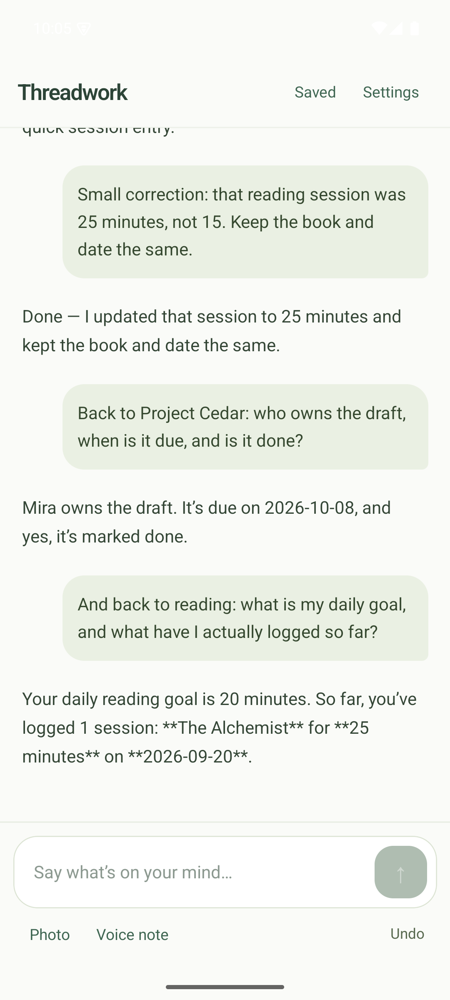

The small-project owner
“Who’s doing what
before Friday?”
Requirements become tasks and decisions. An update in chat keeps the useful view current.
Less copying. A clearer next step.
Project tracking shown in the prototypeA personal mobile prototype · Building in public
The plan is in one chat. The update is fifty messages later. And you’re still the person putting it all together.
Threadwork turns conversations into plans you can follow and progress you can see.
For people who can explain what they need, but don’t want to build another spreadsheet.

The work after the answer
Imagine you’re coordinating a small launch. AI helps with the plan. Then an owner changes, a deadline moves, and a decision gets buried.
You copy the answer into a tracker. Explain the changes again. Check which version is current.
What if the conversation could keep the plan usable?
Use ordinary words. No workspace setup or domain template to choose.
A task list, a progress log, a useful view. The intended design follows your need.
Correct a date. Log what happened. Return later with the important details intact.
One idea. Different lives.
We’re exploring a general-purpose companion, starting with needs people can describe in their own words.
The small-project owner
Requirements become tasks and decisions. An update in chat keeps the useful view current.
Less copying. A clearer next step.
Project tracking shown in the prototypeThe habit beginner
A routine, what actually happened, and a simple way to see progress. Without maintaining a complex tracker.
A plan you can return to.
Reading log demonstrated; fitness journey plannedThe everyday creator
Describe a personal status image, review a sample, and eventually prepare approved variations to share yourself.
Your taste. Less repetitive effort.
Creative and recurring journey plannedEvidence, not a concept animation
These screens come from real model calls in the installed Android prototype. Explore what happened, including what needed repair.
The person corrects a reading session from 15 to 25 minutes, switches back to Project Cedar, then returns to reading. The assistant distinguishes the goal from the recorded activity.
This is a recorded walkthrough, not a live AI sandbox. Fictional demo data. Generation needed repair; physical-phone validation is still pending.

Read the complete transcript and observed outcomes. Waiting and navigation are trimmed. After a force-close and restart with networking disabled, the saved reading record remained accessible. This is local data access, not offline AI.
Where we are today
Threadwork is a personal prototype. It is not ready for important business records or sensitive personal information.
Chat is the starting point. The intended value is what stays useful afterward: records, plans, creative outputs, and small generated interfaces connected to the conversation.
The personal app is designed to store records on your phone and call OpenAI directly with selected context, using your own API key. AI requests leave the device; “local memory” does not mean offline AI or zero provider retention. This website is hosted by GitHub Pages. Early-access responses go to Google Forms.
There is no public app release yet. We’re collecting interest for future testing on Android and iPhone. The current demonstration was recorded on an Android emulator. Joining does not guarantee a test invitation or a launch date.
Automatic WhatsApp posting and ERP integrations are out of scope for the personal MVP. The creative vision uses a user-controlled share action. Neither recurring preparation nor the complete native sharing journey is validated in this demo.
The personal prototype uses your own OpenAI API key, with usage billed by OpenAI. A local estimated spending guard is planned for testing; it is not a provider-wide billing guarantee. No subscription or paid early-access offer is being made here.
Help shape what comes after chat
Tell us what you keep losing, copying, or rebuilding after an AI conversation. We’re looking for early testers who can share a real problem and honest feedback.
Join the early-access listOpens Google Forms · Email and consent required · Use case and phone optional
For testing invitations and product research only. No guaranteed access or launch date.